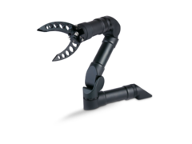
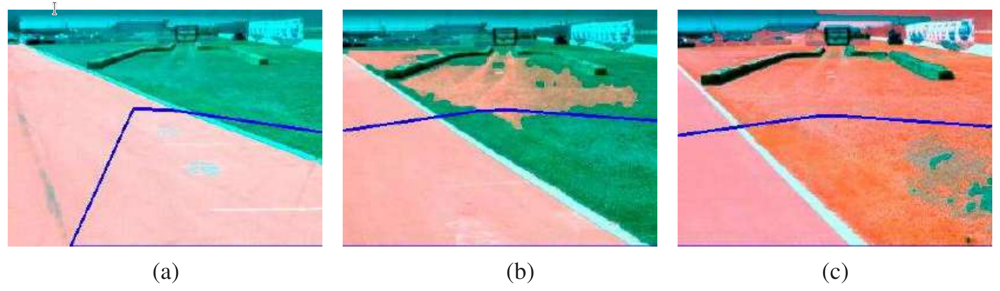
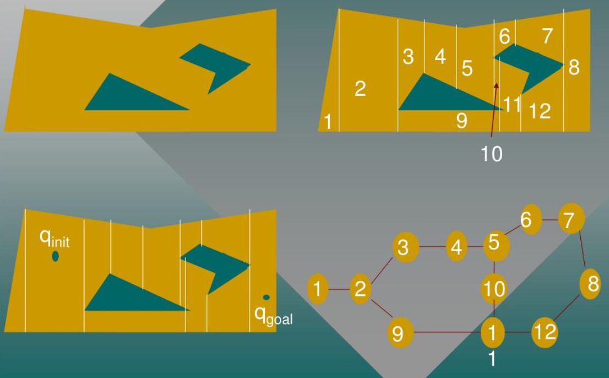

Robótica¶
Introducción¶
Los robots son agentes físicos que realizan tareas manipulando el mundo físico. Para ello, están equipados con efectores como patas, ruedas, articulaciones y pinzas. Los efectores están diseñados para ejercer fuerzas físicas sobre el medio ambiente. Cuando hacen esto, pueden suceder algunas cosas: el estado del robot puede cambiar (por ejemplo, un automóvil hace girar sus ruedas y, como resultado, avanza en la carretera), el estado del entorno puede cambiar (por ejemplo, un brazo robótico usa su agarre para empujar una taza a través del mostrador), e incluso el estado de las personas alrededor del robot podría cambiar (por ejemplo, un exoesqueleto se mueve y eso cambia la configuración de la pierna de una persona; o un robot móvil avanza hacia las puertas del ascensor, y una persona se da cuenta y es lo suficientemente amable como para apartarse del camino o incluso presionar el botón del robot).
Los robots también están equipados con sensores que les permiten percibir su entorno. La robótica actual emplea un conjunto diverso de sensores, que incluyen cámaras, radares, láseres y micrófonos para medir el estado del medio ambiente y de las personas que lo rodean; y giroscopios, sensores de tensión y torsión, y acelerómetros para medir el propio estado del robot.
Maximizar la utilidad esperada de un robot significa elegir cómo activar sus efectores para hacer valer las fuerzas físicas correctas, aquellas que conducirán a cambios de estado que acumularán la mayor recompensa esperada posible. En última instancia, los robots intentan realizar alguna tarea en el mundo físico.
Los robots operan en entornos que son parcialmente observables y estocásticos: las cámaras no pueden ver en las esquinas y los engranajes pueden patinar. Además, las personas que actúan en ese mismo entorno son impredecibles, por lo que el robot necesita hacer predicciones sobre ellas.
Los robots suelen modelar su entorno con un espacio de estado continuo (la posición del robot tiene coordenadas continuas) y un espacio de acción continuo (la cantidad de corriente que un robot envía a su motor también se mide en unidades continuas). Algunos robots operan en espacios de grandes dimensiones: los coches necesitan conocer la posición, orientación y velocidad de ellos mismos y de los agentes cercanos; los brazos del robot tienen seis o siete articulaciones y cada una se puede mover de forma independiente; y los robots que imitan el cuerpo humano tienen cientos de articulaciones.
El aprendizaje robótica está limitado porque el mundo real se niega obstinadamente a operar más rápido que el tiempo real. En un entorno simulado, es posible utilizar algoritmos de aprendizaje (como el algoritmo Q-learning) para aprender en unas pocas horas a partir de millones de pruebas. En un entorno real, llevar a cabo estas pruebas podría llevar años y el robot no puede arriesgarse (y por lo tanto no puede aprender) a una prueba que podría causar daño. Por lo tanto, transferir lo aprendido en la simulación a un robot real en el mundo real (el problema de simulación a real) es un área activa de investigación. Los sistemas robóticos prácticos deben incorporar conocimientos previos sobre el robot, el entorno físico y las tareas a realizar para que el robot pueda aprender rápidamente y desempeñarse de forma segura.
La robótica reúne muchos de los conceptos, incluida la estimación probabilística del estado, la percepción, la planificación, el aprendizaje no supervisado, el aprendizaje por refuerzo y la teoría de juegos. Para algunos de estos conceptos, la robótica sirve como un ejemplo de aplicación desafiante.
Hardware de Robots¶
Hasta ahora nos hemos concentrado en el programa del agente. Pero el éxito de los robots reales depende al menos en la misma medida del diseño de sensores y efectores que sean apropiados para la tarea.
Tipos de robots desde la perspectiva del hardware¶
Cuando piensas en un robot, puedes imaginar algo con una cabeza y dos brazos, moviéndose sobre piernas o ruedas. Estos robots antropomórficos se han popularizado en ficción como la película The Terminator y la caricatura Los Supersónicos. Pero los robots reales tienen muchas formas y tamaños.
Los manipuladores son sólo brazos robóticos. No necesariamente tienen que estar unidos al cuerpo de un robot; podrían simplemente atornillarse a una mesa o al suelo, como ocurre en las fábricas.

Algunos tienen una gran carga útil, como los que ensamblan automóviles, mientras que otros, como los brazos montables en sillas de ruedas que ayudan a las personas con discapacidades motoras, pueden transportar menos pero son más seguros en entornos humanos.
Los robots móviles son aquellos que utilizan ruedas, patas o rotores para moverse por el entorno. Los drones cuadricóptero son un tipo de vehículo aéreo no tripulado (UAV); Los vehículos submarinos autónomos (AUV) recorren los océanos. Pero muchos robots móviles permanecen en el interior y se mueven sobre ruedas, como una aspiradora o un robot repartidor de toallas en un hotel. Sus homólogos al aire libre incluyen coches autónomos o rovers que exploran nuevos terrenos, incluso en la superficie de Marte.

Finalmente, los robots con patas están destinados a atravesar terrenos accidentados a los que no se puede acceder con ruedas. La desventaja es que controlar las piernas para hacer lo correcto es más desafiante que hacer girar las ruedas.
Otros tipos de robots incluyen prótesis, exoesqueletos, robots con alas, enjambres y entornos inteligentes en los que el robot es toda la habitación.
Sintiendo el mundo¶
Los sensores son la interfaz perceptiva entre el robot y el entorno. Los sensores pasivos, como las cámaras, son verdaderos observadores del entorno: capturan señales generadas por otras fuentes del entorno. Los sensores activos, como el sonar, envían energía al medio ambiente. Se basan en el hecho de que esta energía se refleja de vuelta al sensor. Los sensores activos tienden a proporcionar más información que los sensores pasivos, pero a costa de un mayor consumo de energía y con el peligro de interferencias cuando se utilizan varios sensores activos al mismo tiempo. También distinguimos si un sensor está dirigido a detectar el entorno, la ubicación del robot o la configuración interna del robot.
Los telémetros son sensores que miden la distancia a objetos cercanos. Los sensores de sonar son telémetros activos que emiten ondas sonoras direccionales, que son reflejadas por los objetos y parte del sonido regresa al sensor. El tiempo y la intensidad de la señal de retorno indican la distancia a los objetos cercanos. El sonar es la tecnología elegida para los vehículos submarinos autónomos y fue popular en los primeros días de la robótica de interior. La visión estereoscópica se basa en múltiples cámaras para obtener imágenes del entorno desde puntos de vista ligeramente diferentes, analizando el paralaje resultante en estas imágenes para calcular el rango de los objetos circundantes.
Para los robots terrestres móviles, el sonar y la visión estéreo rara vez se utilizan ahora, porque no son confiablemente precisos. El Kinect es un sensor popular de bajo costo que combina una cámara y un proyector de luz estructurada, que proyecta un patrón de líneas de cuadrícula en una escena. La cámara ve cómo se doblan las líneas de la cuadrícula, dándole al robot información sobre la forma de los objetos en la escena. Si se desea, la proyección puede ser luz infrarroja, para no interferir con otros sensores (como los ojos humanos).

La mayoría de los robots terrestres ahora están equipados con telémetros ópticos activos. Al igual que los sensores de sonar, los sensores de alcance óptico emiten señales activas (luz) y miden el tiempo hasta que un reflejo de esta señal llega al sensor. La cámara de tiempo de vuelo adquiere imágenes de rango como la que se muestra más abajo a hasta 60 fotogramas por segundo. Los automóviles autónomos suelen utilizar lidares de escaneo (abreviatura de detección de luz y alcance): sensores activos que emiten rayos láser y detectan el haz reflejado, brindando mediciones de alcance con una precisión de un centímetro a una distancia de 100 metros. Utilizan complejas disposiciones de espejos o elementos giratorios para barrer el haz a través del entorno y construir un mapa. Los lidars de escaneo tienden a funcionar mejor que las cámaras de tiempo de vuelo a distancias más largas y tienden a funcionar mejor a plena luz del día.

El radar suele ser el sensor de determinación de distancia elegido para los vehículos aéreos (autónomos o no). Los sensores de radar pueden medir distancias de hasta kilómetros y tienen la ventaja sobre los sensores ópticos de que pueden ver a través de la niebla. En el extremo cercano del rango de detección se encuentran los sensores táctiles, como bigotes, paneles de protuberancia y piel sensible al tacto. Estos sensores miden el alcance en función del contacto físico y solo pueden implementarse para detectar objetos muy cerca del robot.
Una segunda clase importante son los sensores de ubicación. La mayoría de los sensores de ubicación utilizan la detección de alcance como componente principal para determinar la ubicación. En exteriores, el Sistema de Posicionamiento Global (GPS) es la solución más común al problema de localización. El GPS mide la distancia a los satélites que emiten señales pulsadas. Actualmente hay 31 satélites GPS operativos en órbita y 24 satélites GLONASS, su homólogo ruso. Los receptores GPS pueden recuperar la distancia a un satélite analizando cambios de fase. Triangulando señales de múltiples satélites, los receptores GPS pueden determinar su ubicación absoluta en la Tierra con una precisión de unos pocos metros. El GPS diferencial implica un segundo receptor terrestre con ubicación conocida, que proporciona precisión milimétrica en condiciones ideales.
Desafortunadamente, el GPS no funciona en interiores ni bajo el agua. En interiores, la localización a menudo se logra colocando balizas en el entorno en lugares conocidos. Muchos entornos interiores están llenos de estaciones base inalámbricas, que pueden ayudar a los robots a localizar mediante el análisis de la señal inalámbrica. Las balizas de sonar activas bajo el agua pueden proporcionar una sensación de ubicación, utilizando el sonido para informar a los AUV de sus distancias relativas a esas balizas.
La tercera clase importante son los sensores propioceptivos, que informan al robot de su propio movimiento. Para medir la configuración exacta de una articulación robótica, los motores suelen estar equipados con decodificadores de eje que miden con precisión el movimiento angular de un eje. En los brazos de los robots, los decodificadores de ejes ayudan a rastrear la posición de las articulaciones. En los robots móviles, los decodificadores de eje informan las revoluciones de las ruedas para la odometría (la medición de la distancia recorrida). Desafortunadamente, las ruedas tienden a derrapar y patinar, por lo que la odometría sólo es precisa en distancias cortas. Las fuerzas externas, como el viento y las corrientes oceánicas, aumentan la incertidumbre posicional. Los sensores inerciales, como los giroscopios, reducen la incertidumbre al confiar en la resistencia de la masa al cambio de velocidad.
Otros aspectos importantes del estado del robot se miden mediante sensores de fuerza y sensores de torsión. Son indispensables cuando los robots manipulan objetos frágiles o cuyo tamaño y forma exactos se desconocen. Imagine un manipulador robótico de una tonelada enroscando una bombilla. Sería muy fácil aplicar demasiada fuerza y romper la bombilla. Los sensores de fuerza le permiten al robot sentir con qué fuerza agarra la bombilla y los sensores de torsión le permiten sentir con qué fuerza gira. Los sensores de alta calidad pueden medir fuerzas en las tres direcciones de traslación y tres direcciones de rotación. Lo hacen a una frecuencia de varios cientos de veces por segundo para que un robot pueda detectar rápidamente fuerzas inesperadas y corregir sus acciones antes de que se rompa una bombilla. Sin embargo, puede ser un desafío equipar un robot con sensores de alta gama y la potencia computacional para monitorearlos.
Produciendo movimiento¶
El mecanismo que inicia el movimiento de un efector se llama actuador; los ejemplos incluyen transmisiones, engranajes, cables y varillajes. El tipo más común de actuador es el actuador eléctrico, que utiliza electricidad para hacer girar un motor. Se utilizan predominantemente en sistemas que necesitan movimiento de rotación, como las articulaciones de un brazo robótico. Los actuadores hidráulicos utilizan fluido hidráulico presurizado (como aceite o agua) y los actuadores neumáticos utilizan aire comprimido para generar movimiento mecánico.
Los actuadores se utilizan a menudo para mover juntas que conectan cuerpos rígidos (enlaces). Los brazos y las piernas tienen este tipo de articulaciones. En las articulaciones de revolución, un eslabón gira con respecto al otro. En las uniones prismáticas, un eslabón se desliza a lo largo del otro. Ambas son articulaciones de un solo eje (un eje de movimiento). Otros tipos de articulaciones incluyen articulaciones esféricas, cilíndricas y planas, que son articulaciones multieje.
Para interactuar con los objetos del entorno, los robots utilizan pinzas. El tipo más básico de pinza es la pinza de mandíbula paralela, con dos dedos y un único actuador que junta los dedos para agarrar objetos. Este efector es amado y odiado por su simplicidad.

Las pinzas de tres dedos ofrecen un poco más de flexibilidad manteniendo la simplicidad. En el otro extremo del espectro están las manos humanoides (antropomórficas). Por ejemplo, Shadow Dexterous Hand tiene un total de 20 actuadores. Esto ofrece mucha más flexibilidad para manipulaciones complejas, incluidas maniobras con manipuladores en la mano (piense en levantar su teléfono celular y girarlo en la mano para orientarlo hacia arriba), pero esta flexibilidad tiene un precio: aprender a controlar Estas pinzas complejas son más desafiantes.
¿Qué tipo de problema resuelve la robótica?¶
Ahora que sabemos cuál podría ser el hardware del robot, estamos listos para considerar el software agente que impulsa el hardware para lograr nuestros objetivos. Primero debemos decidir el marco computacional para este agente.
Ya hemos señalado que los problemas de la robótica no son deterministas, parcialmente observables y multiagentes. Podemos ver que a veces los agentes cooperan y otras son competitivos. En un pasillo estrecho donde sólo un agente puede pasar primero, un robot y una persona colaboran porque ambos quieren asegurarse de no chocar entre sí. Pero en algunos casos pueden competir un poco para llegar rápidamente a su destino. Si el robot es demasiado educado y siempre deja espacio, puede quedarse atrapado en situaciones abarrotadas y nunca alcanzar su objetivo.
¿Cuál es la función de recompensa del robot en esta formulación? Por lo general, el robot actúa al servicio de un ser humano; por ejemplo, entregando una comida a un paciente del hospital para obtener una recompensa del paciente, no la suya propia. Para la mayoría de entornos de robótica, aunque los diseñadores de robots podrían intentar especificar una función de recompensa suficientemente buena, la verdadera función de recompensa recae en el usuario a quien se supone que el robot debe ayudar. El robot necesitará descifrar los deseos del usuario o confiar en un ingeniero para especificar una aproximación a los deseos del usuario.
En cuanto a los espacios de acción, estado y observación del robot, la forma más general es que las observaciones son señales sin procesar de los sensores (por ejemplo, las imágenes provenientes de las cámaras o los impactos del láser provenientes del lidar); las acciones son corrientes eléctricas brutas que se envían a los motores; y el estado es lo que el robot necesita saber para tomar decisiones. Esto significa que existe una enorme brecha entre las percepciones de bajo nivel y los controles motores, y los planes de alto nivel que el robot necesita hacer. Para cerrar la brecha, los robóticos desacoplan aspectos del problema para simplificarlo.
En robótica solemos utilizar una jerarquía de tres niveles. El nivel de planificación de tareas decide un plan o política para acciones de alto nivel, a veces llamadas primitivas de acción o submetas: moverse hacia la puerta, abrirla, ir al ascensor, presionar el botón, etc. Luego, la planificación de movimientos se encarga de encontrar un camino que lleva al robot de un punto a otro, logrando cada subobjetivo. Finalmente, el control se utiliza para lograr el movimiento planificado utilizando los actuadores del robot. Dado que el nivel de planificación de tareas normalmente se define sobre estados y acciones discretos, en este capítulo nos centraremos principalmente en la planificación y el control del movimiento.
Por otra parte, el aprendizaje de preferencias se encarga de estimar el objetivo de un usuario final y la predicción de personas se utiliza para pronosticar las acciones de otras personas en el entorno del robot. Todos estos se combinan para determinar el comportamiento del robot.
Siempre que dividimos un problema en partes separadas, reducimos la complejidad, pero renunciamos a oportunidades para que las partes se ayuden entre sí. La acción puede ayudar a mejorar la percepción y también a determinar qué tipo de percepción es útil. De manera similar, las decisiones a nivel de movimiento podrían no ser las mejores a la hora de tener en cuenta cómo se dará seguimiento a ese movimiento; o las decisiones a nivel de tarea podrían hacer que el plan de tarea no sea instanciable a nivel de movimiento. Entonces, con el progreso en estas áreas separadas viene el impulso para reintegrarlas: planificar y controlar el movimiento juntos, planificar tareas y movimientos juntos, y reintegrar la percepción, la predicción y la acción, cerrando el ciclo de retroalimentación.
Información
Hoy en día, la robótica consiste en seguir progresando en cada área y, al mismo tiempo, aprovechar ese progreso para lograr una mejor integración.
Percepción robótica¶
La percepción es el proceso mediante el cual los robots transforman las mediciones de los sensores en representaciones internas del entorno. Pero la percepción de la robótica debe lidiar con sensores adicionales como lidar y sensores táctiles.
La percepción es difícil porque los sensores son ruidosos y el entorno es parcialmente observable, impredecible y a menudo dinámico. En otras palabras, los robots tienen todos los problemas de estimación (o filtrado) de estado. Como regla general, una buena representación interna de un robot tiene tres propiedades:
- Contienen suficiente información para que el robot tome buenas decisiones.
- Están estructurados para que puedan actualizarse de manera eficiente.
- Son naturales en el sentido de que las variables internas corresponden a variables de estado natural en el mundo físico.
Los filtros de Kalman, los HMM y las redes de Bayes pueden representar los modelos de transición y de sensor de un entorno parcialmente observable, y describimos algoritmos exactos y aproximados para actualizar el estado de creencia: la distribución de probabilidad posterior sobre el entorno. Variables de estado. Para problemas de robótica, incluimos las acciones pasadas del propio robot como variables observadas en el modelo.
Localización y mapeo¶
La localización es el problema de descubrir dónde están las cosas, incluido el propio robot. Para simplificar las cosas, consideremos un robot móvil que se mueve lentamente en un mundo plano bidimensional. Supongamos también que al robot se le proporciona un mapa exacto del entorno. La pose de dicho robot móvil se define por sus dos coordenadas cartesianas con valores x e y y su rumbo con valor θ.
En la aproximación cinemática, cada acción consiste en la especificación “instantánea” de dos velocidades: una velocidad de traslación vt y una velocidad de rotación ωt. Para intervalos de tiempo pequeños ∆t, un modelo determinista crudo del movimiento de dichos robots viene dado por la notación X̂ se refiere a una predicción de estado determinista. Por supuesto, los robots físicos son algo impredecibles. Esta distribución de probabilidad es el modelo de movimiento del robot. Modela los efectos del movimiento en la ubicación del robot.
A continuación, necesitamos un modelo de sensor. Consideraremos dos tipos de modelos de sensores. El primero supone que los sensores detectan características estables y reconocibles del entorno llamadas puntos de referencia. Para cada punto de referencia, se informa el alcance y el rumbo. Sin ruido, se puede calcular una predicción del alcance y el rumbo mediante geometría simple. Una vez más, el ruido distorsiona nuestras mediciones. Para simplificar las cosas, supongamos ruido gaussiano con covarianza, lo que nos da el modelo del sensor.
Se utiliza un modelo de sensor algo diferente para una matriz de sensores de alcance, cada uno de los cuales tiene un rumbo fijo con respecto al robot. Estos sensores producen un vector de valores. Dada una pose xt, el rango calculado a lo largo de la dirección del haz desde xt hasta el obstáculo más cercano. Como antes, esto se verá corrompido por el ruido gaussiano. Normalmente, asumimos que los errores para las diferentes direcciones del haz son independientes y están distribuidos de manera idéntica.
El filtro de Kalman, que representa el estado de creencia como un gaussiano multivariado único, y el filtro de partículas, que representa el estado de creencia mediante una colección de partículas que corresponden a estados. La mayoría de los algoritmos de localización modernos utilizan una de estas dos representaciones de la creencia del robot.
La localización mediante filtrado de partículas se denomina localización de Monte Carlo o MCL. Todo lo que tenemos que hacer es proporcionar el modelo de movimiento y el modelo de sensor adecuados. El funcionamiento del algoritmo se se ve más abajo. Cuando el robot descubre dónde se encuentra dentro de un edificio de oficinas. En la primera imagen, las partículas están distribuidas uniformemente según la anterior, lo que indica incertidumbre global sobre la posición del robot. En la segunda imagen, llega el primer conjunto de mediciones y las partículas forman cúmulos en las zonas de alta creencia posterior. En el tercero, se dispone de suficientes mediciones para empujar todas las partículas a un solo lugar.

El filtro de Kalman es la otra forma importante de localización. A medida que el robot se mueve, la incertidumbre en la estimación de su ubicación aumenta. Su error disminuye a medida que detecta el alcance y el rumbo hacia un punto de referencia con una ubicación conocida y aumenta nuevamente cuando el robot pierde de vista el punto de referencia. Los algoritmos EKF funcionan bien si los puntos de referencia se identifican fácilmente.
En algunas situaciones, no hay ningún mapa del entorno disponible. Entonces el robot deberá adquirir un mapa. Este es un problema del huevo y la gallina: el robot de navegación tendrá que determinar su ubicación en relación con un mapa que no conoce del todo y, al mismo tiempo, construir este mapa aunque no conozca su ubicación real. Este problema es importante para muchas aplicaciones de robots y se ha estudiado ampliamente bajo el nombre de localización y mapeo simultáneos, abreviado como SLAM.
Los problemas de SLAM se resuelven utilizando muchas técnicas probabilísticas diferentes, incluido el filtro de Kalman extendido discutido anteriormente. Usar el EKF es sencillo: simplemente aumente el vector de estado para incluir las ubicaciones de los puntos de referencia en el entorno. Afortunadamente, la actualización de EKF escala cuadráticamente, por lo que para mapas pequeños (por ejemplo, unos pocos cientos de puntos de referencia) el cálculo es bastante factible. A menudo se obtienen mapas más ricos utilizando métodos de relajación de gráficos, similares a las técnicas de inferencia de redes bayesianas.
Otros tipos de percepción¶
No toda la percepción de los robots tiene que ver con la localización o el mapeo. Los robots también perciben temperatura, olores, sonidos, etc. Muchas de estas cantidades pueden estimarse utilizando variantes de redes dinámicas de Bayes. Todo lo que se requiere para tales estimadores son distribuciones de probabilidad condicional que caractericen la evolución de las variables de estado a lo largo del tiempo y modelos de sensores que describan la relación de las mediciones con las variables de estado.
La tendencia en robótica es claramente hacia representaciones con una semántica bien definida. Las técnicas probabilísticas superan a otros enfoques en muchos problemas de percepción difíciles, como la localización y el mapeo. Sin embargo, las técnicas estadísticas son a veces demasiado engorrosas y soluciones más simples pueden ser igual de efectivas en la práctica.
Aprendizaje supervisado y no supervisado en percepción de robots¶
El aprendizaje automático juega un papel importante en la percepción de los robots. Este es particularmente el caso cuando no se conoce cuál es la mejor representación interna. Un enfoque común es mapear flujos de sensores de alta dimensión en espacios de menor dimensión utilizando métodos de aprendizaje automático no supervisados. Este enfoque se denomina incrustación de baja dimensión. El aprendizaje automático permite aprender modelos de sensores y de movimiento a partir de datos y, al mismo tiempo, descubrir una representación interna adecuada.
Otra técnica de aprendizaje automático permite a los robots adaptarse continuamente a grandes cambios en las mediciones de los sensores. Imagínese caminando desde un espacio iluminado por el sol hacia una habitación oscura con luces de neón. Claramente, las cosas son más oscuras por dentro. Pero el cambio de fuente de luz también afecta a todos los colores: la luz de neón tiene un componente de luz verde más fuerte que la luz solar. Sin embargo, de alguna manera parece que no notamos el cambio. Si entramos con personas en una habitación iluminada con luces de neón, no creemos que sus caras de repente se pongan verdes. Nuestra percepción se adapta rápidamente a las nuevas condiciones de iluminación y nuestro cerebro ignora las diferencias.

Las técnicas de percepción adaptativa permiten a los robots adaptarse a tales cambios. En la Figura superior se muestra un ejemplo, tomado del ámbito de la conducción autónoma. Aquí un vehículo terrestre no tripulado adapta su clasificador del concepto “superficie transitable”. ¿Cómo funciona esto? El robot utiliza un láser para clasificar un área pequeña inmediatamente frente al robot. Cuando en el escaneo del alcance del láser se encuentra que esta zona es plana, se utiliza como ejemplo de entrenamiento positivo para el concepto "superficie transitable". Luego se entrena una técnica de mezcla de gaussianos, las imágenes anteriores son el resultado de aplicar este clasificador a la imagen completa.
Los métodos que hacen que los robots recopilen sus propios datos de entrenamiento (¡con etiquetas!) se denominan autosupervisados. En este caso, el robot utiliza el aprendizaje automático para aprovechar un sensor de corto alcance que funciona bien para la clasificación del terreno y convertirlo en un sensor que puede ver mucho más lejos. Eso permite que el robot conduzca más rápido y desacelere solo cuando el modelo del sensor indica que hay un cambio en el terreno que debe ser examinado más cuidadosamente por los sensores de corto alcance.
Planificación y Control¶
En última instancia, las deliberaciones del robot se reducen a decidir cómo moverse, desde el nivel de la tarea abstracta hasta las corrientes que se envían a sus motores.
Empezamos separando el movimiento del control. Definimos una trayectoria como una secuencia de puntos en el espacio geométrico que seguirá un robot (o una parte de un robot, como un brazo). Esto está relacionado con la noción de camino, pero aquí nos referimos a una secuencia de puntos en el espacio más que a una secuencia de acciones discretas. La tarea de encontrar un buen camino se llama planificación del movimiento.
Una vez que tenemos un camino, la tarea de ejecutar una secuencia de acciones para seguir el camino se llama control de seguimiento de trayectoria. Una trayectoria es un camino que tiene un tiempo asociado con cada punto del camino. Un camino simplemente dice "ir de A a B, a C, etc." y una trayectoria dice "empieza en A, toma 1 segundo para llegar a B y otros 1,5 segundos para llegar a C, etc."
Espacio de configuración¶
Un espacio de configuración, se refiere a un espacio abstracto que representa todas las posibles configuraciones o estados que un sistema puede adoptar. Esto es especialmente relevante en el contexto de sistemas autónomos como robots o agentes inteligentes, donde el sistema necesita tomar decisiones sobre qué acción tomar en función de su entorno y su estado interno.
En el caso de los robots, el espacio de configuración podría incluir variables como la posición y orientación del robot, las posibles velocidades y aceleraciones que puede alcanzar, las posiciones de los objetos en su entorno, entre otros factores relevantes para la tarea que debe realizar el robot.
Entender y explorar el espacio de configuración es fundamental para diseñar algoritmos y sistemas que puedan tomar decisiones efectivas y eficientes en diferentes situaciones.
Planificación de movimiento¶
El problema de la planificación del movimiento consiste en encontrar un plan que lleve a un robot de una configuración a otra sin chocar con un obstáculo. Es un componente básico para el movimiento y la manipulación.
El problema de planificación del movimiento a veces se denomina problema de la mudanza del piano. Debe su nombre a los esfuerzos de una empresa de mudanzas por llevar un piano grande y de forma irregular de una habitación a otra sin golpear nada. Se nos da:
- un mundo de espacio de trabajo W (World),
- una región de obstáculo O ⊂ W (Obstacle),
- un robot con un espacio de configuración C (Configuration) y un conjunto de puntos A(q) para q ∈ C,
- una configuración inicial qs ∈ C, y (q start)
- una configuración objetivo qg ∈ C. (q goal)
La región del obstáculo induce un obstáculo en el espacio y su correspondiente espacio libre definido como en la sección anterior. Necesitamos encontrar un camino continuo a través del espacio libre. Usaremos una curva parametrizada, para representar el camino.
El problema de la planificación del movimiento puede hacerse más complejo de varias maneras: definiendo el objetivo como un conjunto de configuraciones posibles en lugar de una configuración única; definir una función de costo (por ejemplo, longitud del camino) a minimizar; satisfacer las limitaciones (por ejemplo, si el camino implica llevar una taza de café, asegurarse de que la taza esté siempre orientada en posición vertical para que el café no se derrame).
Ahora consideremos algunas formas de resolver el problema de planificación del movimiento.
Gráficos de visibilidad¶

Los gráficos de visibilidad son una técnica comúnmente utilizada en la planificación de movimiento para robots móviles. Estos gráficos representan una estructura de datos que modela la conectividad entre diferentes puntos en un entorno, teniendo en cuenta las líneas de visibilidad entre estos puntos. Son particularmente útiles en entornos con obstáculos donde se desea encontrar un camino libre de colisiones para un robot.
Se utilizan del siguiente modo:
- Representación del entorno: Para crear un gráfico de visibilidad, primero se necesita una representación del entorno en el que se moverá el robot. Esta representación puede ser en forma de un mapa discretizado, donde los obstáculos se representan como áreas intransitables, o puede ser en forma de una nube de puntos que representa los límites de los obstáculos.
- Puntos de visibilidad: Se identifican los puntos en el espacio que tienen líneas de visibilidad claras entre ellos. Estos puntos generalmente incluyen vértices de los obstáculos y puntos de intersección de líneas de visión claras en el espacio libre entre los obstáculos.
- Construcción del grafo: Se construye un grafo donde los nodos representan los puntos de visibilidad y las aristas representan las líneas de visión claras entre ellos. Es importante tener en cuenta que este grafo puede ser dirigido o no dirigido, dependiendo de la aplicación específica.
- Algoritmos de búsqueda: Una vez que se ha construido el grafo de visibilidad, se pueden utilizar algoritmos de búsqueda como A* o Dijkstra para encontrar el camino más corto y seguro entre dos puntos en el entorno. Estos algoritmos operan en el grafo de visibilidad y tienen en cuenta las restricciones de movimiento del robot y la presencia de obstáculos.
- Optimización y refinamiento: A menudo, los caminos encontrados por los algoritmos de búsqueda pueden ser subóptimos o no factibles debido a limitaciones del entorno o del robot. En este caso, se pueden aplicar técnicas de optimización y refinamiento para mejorar el camino encontrado, como suavizado de trayectorias o replanificación dinámica.
Diagramas de Voronoi¶

Estos gráficos dividen un espacio en regiones que representan el área más cercana a un conjunto dado de puntos de control o sitios. En el contexto de la planificación de movimiento para robots, los puntos de control suelen ser los obstáculos en el entorno.
La forma de utilizarlos es:
- Identificación de puntos de control: los puntos de control suelen ser los límites de los obstáculos en el entorno. Estos puntos pueden ser esquinas, vértices o cualquier punto distintivo en los límites de los obstáculos.
- Diagrama de Voronoi: Una vez que se han identificado los puntos de control, se construye el diagrama de Voronoi. Este diagrama divide el espacio en regiones donde cada región está asociada con uno de los puntos de control y contiene todos los puntos que están más cerca de ese punto de control que de cualquier otro. Estas regiones se llaman celdas de Voronoi.
- Gráfico de Voronoi: Las celdas de Voronoi se representan como polígonos, y los límites entre las celdas se representan como líneas. Este gráfico proporciona una visualización clara de cómo se divide el espacio en función de la proximidad a los puntos de control.
- Planificación de trayectorias: Una vez que se ha construido el gráfico de Voronoi, se puede utilizar para planificar trayectorias seguras para el robot móvil. Esto se logra encontrando un camino que minimice la distancia al punto de control más cercano en cada punto de la trayectoria, lo que garantiza que el robot se mantenga lo más alejado posible de los obstáculos.
- Optimización y refinamiento: A menudo, los caminos encontrados utilizando el gráfico de Voronoi pueden ser subóptimos o no factibles debido a restricciones adicionales del entorno o del robot. En estos casos, se pueden aplicar técnicas de optimización y refinamiento para mejorar el camino encontrado, como suavizado de trayectorias o replanificación dinámica.
Descomposición celular¶

La descomposición celular (o celullar decomposition, en inglés) se basa en dividir el espacio del entorno en regiones más simples y manejables, lo que facilita la planificación de trayectorias para el robot.
Procedemos de la siguiente manera:
- Representación del entorno: Para utilizar la descomposición celular, primero necesitas una representación del entorno en el que el robot se moverá. Esto podría ser un mapa discreto donde los obstáculos se representan como áreas intransitables, o podría ser una nube de puntos que represente los límites de los obstáculos.
- División del espacio: La descomposición celular divide el espacio del entorno en celdas más pequeñas y manejables. Estas celdas pueden tener diferentes formas y tamaños dependiendo del enfoque específico de la descomposición utilizada. Una opción común es dividir el espacio en celdas regulares (por ejemplo, cuadrados en un plano 2D o cubos en un espacio 3D).
- Conexiones entre celdas: Una vez que se han definido las celdas, se determinan las conexiones entre ellas. Esto implica identificar qué celdas son adyacentes entre sí y, por lo tanto, podrían ser transitables para el robot. Las conexiones pueden basarse en la geometría del entorno o en otros criterios relevantes para la planificación de movimiento, como la distancia o la visibilidad entre celdas.
- Creación de un grafo de movimiento: Con las celdas y las conexiones definidas, se crea un grafo donde los nodos representan las celdas y las aristas representan las conexiones entre ellas. Este grafo se utiliza entonces para encontrar una trayectoria libre de colisiones para el robot, utilizando algoritmos de búsqueda como A* o Dijkstra.
- Optimización y refinamiento: Una vez que se ha encontrado una trayectoria utilizando el grafo de movimiento, es posible que se requiera optimización y refinamiento adicionales para mejorar la calidad de la trayectoria. Esto podría implicar técnicas como suavizado de trayectorias, replanificación dinámica o tener en cuenta restricciones específicas del robot o del entorno.
Planificación de movimiento aleatoria (Probabilistic RoadMap PRM)¶
Se basa en la generación y evaluación de trayectorias de manera aleatoria en el espacio de configuración del robot. Aunque puede sonar simple, esta técnica puede ser sorprendentemente efectiva en entornos complejos o desconocidos donde no es posible utilizar métodos deterministas debido a la falta de información precisa sobre el entorno o la presencia de obstáculos dinámicos.
Aquí hay una explicación más detallada de cómo funciona la planificación de movimiento aleatoria:
- Inicialización: La planificación de movimiento aleatoria comienza con la inicialización de una trayectoria de movimiento para el robot. Esto generalmente implica definir un punto de partida y un objetivo dentro del espacio de trabajo del robot.
- Generación de trayectorias aleatorias: A partir del punto de partida, se generan aleatoriamente una serie de posibles trayectorias de movimiento para el robot. Estas trayectorias pueden ser generadas de varias formas, como seleccionar puntos aleatorios dentro del espacio de trabajo y trazar una trayectoria entre ellos, o generando secuencias aleatorias de movimientos elementales que el robot puede realizar.
- Evaluación de las trayectorias: Cada trayectoria generada aleatoriamente se evalúa para determinar su calidad en función de ciertos criterios. Estos criterios pueden incluir la longitud de la trayectoria, la cantidad de colisiones con obstáculos, la distancia al objetivo, entre otros. Se pueden utilizar heurísticas o funciones de coste para asignar una puntuación a cada trayectoria en función de estos criterios.
- Selección de la mejor trayectoria: Después de evaluar todas las trayectorias generadas aleatoriamente, se selecciona la mejor trayectoria según los criterios establecidos. Esta trayectoria puede no ser la óptima, pero se considera satisfactoria dadas las limitaciones del enfoque aleatorio.
- Refinamiento y repetición: Una vez que se ha seleccionado una trayectoria, se puede realizar un refinamiento adicional para mejorar su calidad. Esto puede implicar suavizar la trayectoria, resolver colisiones potenciales o realizar ajustes para adaptarse mejor al entorno. Además, si la trayectoria no es satisfactoria, el proceso puede repetirse generando y evaluando nuevas trayectorias aleatorias hasta que se encuentre una solución aceptable.
Árboles aleatorios que se exploran rápidamente¶
RRT (Rapidly-exploring Random Trees) es una variante del algoritmo busca generar un camino entre un punto inicial y un punto objetivo explorando desde ambos extremos simultáneamente. Aquí te explico cómo funciona:
- Inicialización: Se inicia con dos árboles, uno que comienza en el punto inicial y otro que comienza en el punto objetivo. Cada árbol consta de un solo nodo que representa su respectivo punto de partida.
- Expansión aleatoria: En cada iteración del algoritmo, se genera aleatoriamente un nuevo punto en el espacio de configuración, uno para cada árbol. Estos puntos aleatorios son generados de manera similar a como se describe en el RRT estándar, posiblemente influenciados por la posición del otro punto objetivo.
- Extensión de árboles: Cada nuevo punto generado se conecta al nodo más cercano en el árbol correspondiente. Esto implica que cada árbol se expande hacia el punto generado. Se verifica la validez de las conexiones y se añaden los nuevos nodos al árbol si la conexión es viable.
- Colisión de árboles: En cada iteración, se verifica si los árboles se han encontrado entre sí. Esto se puede hacer comprobando si un nuevo nodo generado en un árbol se encuentra dentro de un cierto radio de cercanía de un nodo en el otro árbol. Si se encuentran, se ha encontrado una posible solución.
- Construcción del camino: Una vez que los dos árboles se han encontrado, se puede construir un camino entre el punto inicial y el punto objetivo. Esto se hace trazando una trayectoria desde el nodo del árbol inicial hasta el nodo del árbol objetivo, combinando las trayectorias de ambos árboles.
- Optimización y refinamiento: Después de encontrar un camino inicial, se puede realizar una optimización adicional para mejorar su calidad. Esto puede implicar suavizar la trayectoria, resolver colisiones potenciales o eliminar trayectorias redundantes.
- Finalización y selección de la mejor trayectoria: Una vez que se ha encontrado una trayectoria satisfactoria, se selecciona como la solución del problema de planificación de movimiento.
Optimización de trayectoria para planificación cinemática¶
La optimización de trayectoria en la planificación cinemática para robots se refiere al proceso de mejorar una trayectoria generada inicialmente para que cumpla con ciertos criterios específicos, como minimizar el tiempo de ejecución, reducir la energía consumida, evitar colisiones o maximizar la suavidad de la trayectoria. Aquí están los pasos principales involucrados en la optimización de trayectorias para la planificación de movimiento de robots:
- Definición de la función objetivo: Antes de iniciar la optimización, es necesario definir una función objetivo que capture los objetivos de optimización deseados. Esta función puede tener varios componentes, como la distancia recorrida, el tiempo de ejecución, la energía consumida, la suavidad de la trayectoria o la distancia mínima a los obstáculos.
- Formulación del problema de optimización: Una vez que se ha definido la función objetivo, el problema de optimización se formula para encontrar la trayectoria que minimiza o maximiza esta función objetivo, sujeto a ciertas restricciones. Estas restricciones pueden incluir limitaciones en la velocidad, aceleración o jerarquías cinemáticas del robot, así como restricciones de colisión con el entorno.
- Selección de algoritmo de optimización: Existen diversos algoritmos de optimización que pueden utilizarse para resolver el problema formulado. Algunos de los algoritmos comúnmente utilizados incluyen el método del gradiente descendente, algoritmos de búsqueda heurística como algoritmos genéticos, optimización basada en enjambres de partículas (PSO), optimización por enjambre de hormigas (ACO), entre otros.
- Aplicación del algoritmo de optimización: Una vez seleccionado el algoritmo adecuado, se aplica para encontrar la trayectoria que optimiza la función objetivo. Esto implica ejecutar el algoritmo en iteraciones sucesivas, donde en cada iteración se ajusta la trayectoria actual en función de la función objetivo y las restricciones.
- Evaluación de la solución obtenida: Después de que el algoritmo de optimización converge o alcanza un cierto criterio de finalización, se evalúa la solución obtenida para asegurarse de que cumple con los requisitos deseados. Esto puede implicar la simulación de la trayectoria planificada en un entorno virtual para verificar la ausencia de colisiones y la suavidad de la trayectoria.
- Refinamiento y ajuste: Si es necesario, se pueden realizar ajustes adicionales en la trayectoria obtenida para mejorar su calidad. Esto puede incluir técnicas de suavizado de trayectorias para reducir las discontinuidades, ajustes locales para evitar colisiones o cambios en la parametrización de la trayectoria para optimizarla aún más.
Control de seguimiento de trayectoria¶
El control de seguimiento de trayectoria en el movimiento de robots se encarga de guiar al robot para que siga una trayectoria planificada lo más cercanamente posible, considerando limitaciones del sistema y perturbaciones externas. Este proceso implica varios pasos:
- Obtención de la trayectoria planificada: Se adquiere la trayectoria deseada que se espera que el robot siga.
- Realimentación de la información del sistema: Se recopila información en tiempo real sobre el estado del robot, como su posición, velocidad y orientación.
- Comparación con la trayectoria planificada: Se compara continuamente el estado actual del robot con la trayectoria planificada para determinar el error de seguimiento.
- Diseño del controlador: Se diseña un controlador que genere comandos de control para minimizar el error y guiar al robot hacia la trayectoria deseada.
- Aplicación de los comandos de control: Los comandos de control se aplican al sistema del robot para influir en su movimiento y lograr que siga la trayectoria planificada.
- Realimentación y ajuste continuo: Se ajustan los comandos de control en cada ciclo de control para mantener al robot en la trayectoria deseada, incluso en presencia de perturbaciones.
Para lograr este seguimiento de trayectoria, se utilizan diferentes tipos de controladores, como:
- Controlador Proporcional (P): Aplica fuerza en proporción negativa al error observado entre la posición real y deseada del robot.
- Controlador Proporcional-Derivado (PD): Extiende el control proporcional al agregar un término que es proporcional a la primera derivada del error a lo largo del tiempo, lo que amortigua el sistema controlado.
- Controlador Proporcional-Integral-Derivado (PID): Incluye un término adicional que integra el error en el tiempo, lo que ayuda a corregir errores sistemáticos prolongados.
- Control de Par Calculado: Combina la dinámica inversa con la realimentación del error para calcular el par necesario que el modelo del robot cree que se requiere, compensando la inexactitud del modelo con términos de error proporcionales.
Planes versus políticas¶
Con el movimiento en robótica, en realidad estamos considerando un MDP (Markov Decision Process) subyacente donde los estados son estados dinámicos (configuración y velocidad) y las acciones son entradas de control, generalmente en forma de pares. Si echas otro vistazo a nuestras leyes de control anteriores, son políticas, no planes: le dicen al robot qué acción tomar desde cualquier estado al que pueda llegar. Sin embargo, suelen estar lejos de ser políticas óptimas. Debido a que el estado dinámico es continuo y de alta dimensión (al igual que el espacio de acción), las políticas óptimas son computacionalmente difíciles de extraer.
En cambio, lo que hicimos aquí fue solucionar el problema. Primero elaboramos un plan, en un estado y un espacio de acción simplificados: usamos solo el estado cinemático y asumimos que los estados son alcanzables entre sí sin prestar atención a la dinámica subyacente. Esta es la planificación del movimiento y nos da la ruta de referencia.
Pero como nuestro modelo dinámico suele ser erróneo, lo convertimos en una política que intenta seguir el plan, volviendo a él cuando se aleja. Al hacer esto, introducimos suboptimidad de dos maneras: primero, planificando sin considerar la dinámica y, segundo, asumiendo que si nos desviamos del plan, lo óptimo es volver al plan original. A continuación, describimos técnicas que calculan políticas directamente sobre el estado dinámico, evitando la separación por completo.
Control óptimo¶
En lugar de utilizar un planificador para crear una ruta cinemática y preocuparse únicamente por la dinámica del sistema después del hecho, aquí analizamos cómo podríamos hacerlo todo a la vez. Tomaremos el problema de optimización de trayectorias para rutas cinemáticas y lo convertiremos en una verdadera optimización de trayectorias con dinámica: optimizaremos directamente sobre las acciones, teniendo en cuenta la dinámica (o transiciones).
El enfoque propuesto combina la planificación de trayectorias con la dinámica del sistema en una sola optimización. Se busca una secuencia de acciones que minimice un costo acumulado, teniendo en cuenta la transición del estado del sistema y las restricciones. Esto se relaciona con la planificación de movimiento y el control de seguimiento de trayectorias al considerar configuraciones y acciones simultáneamente.
Para resolver este problema, se pueden tomar gradientes del costo acumulado con respecto a las acciones. Se utilizan técnicas de optimización de trayectorias como el tiroteo múltiple y la colocación directa. Cuando el costo es cuadrático y la dinámica es lineal, se puede aplicar el regulador cuadrático lineal (LQR), que encuentra una política óptima de forma eficiente. Aunque los problemas reales rara vez cumplen estas condiciones, el LQR y su variante ILQR se utilizan ampliamente en la práctica.
Planificación de movimientos inciertos¶
En robótica, la incertidumbre surge de la observabilidad parcial del entorno y de los efectos estocásticos (o no modelados) de las acciones del robot. También pueden surgir errores por el uso de algoritmos de aproximación, como el filtrado de partículas, que no le dan al robot un estado de creencia exacto incluso si el entorno está modelado perfectamente.
La mayoría de los robots actuales utilizan algoritmos deterministas para la toma de decisiones, como los algoritmos de planificación de ruta de la sección anterior o los algoritmos de búsqueda. Estos algoritmos deterministas se adaptan de dos maneras: en primer lugar, se ocupan de la espacio de estado continuo convirtiéndolo en un espacio discreto (por ejemplo, con gráficos de visibilidad o descomposición de celdas). En segundo lugar, abordan la incertidumbre en el estado actual eligiendo el estado más probable a partir de la distribución de probabilidad producida por el algoritmo de estimación del estado. Ese enfoque hace que el cálculo sea más rápido y se adapta mejor a los algoritmos de búsqueda deterministas. En esta sección analizamos métodos para abordar la incertidumbre.
- Replanificación en línea: En entornos inciertos, los planes deterministas pueden volverse subóptimos. La replanificación en línea, como el control predictivo de modelos (MPC), permite recalcular continuamente planes basados en nueva información. Esto se logra planificando para un horizonte temporal corto y ajustando los planes en cada paso del tiempo.
- Acciones de recopilación de información: La incertidumbre también requiere acciones específicas para recopilar información relevante. En lugar de separar la estimación del control, se puede resolver un Proceso de Decisión de Markov Parcialmente Observado (POMDP) para considerar la incertidumbre en la planificación. Esto permite que el robot razone sobre la información futura que podría obtener y tome acciones óptimas considerando tanto la información actual como la futura.
Aprendizaje por refuerzo en robótica¶
Hasta ahora hemos considerado tareas en las que el robot tiene acceso al modelo dinámico del mundo. En muchas tareas, es muy difícil escribir un modelo de este tipo, lo que nos sitúa en el dominio del aprendizaje por refuerzo (RL).
Un desafío de RL en robótica es la naturaleza continua de los espacios de estado y acción, que manejamos mediante discretización o, más comúnmente, mediante aproximación de funciones. Las políticas o funciones de valor se representan como combinaciones de características útiles conocidas o como redes neuronales profundas. Las redes neuronales pueden mapear desde entradas sin procesar directamente a salidas y, por lo tanto, evitan en gran medida la necesidad de ingeniería de características, pero requieren más datos.
Un desafío mayor es que los robots operen en el mundo real. Hemos visto cómo se puede utilizar el aprendizaje por refuerzo para aprender a jugar al ajedrez o al Go jugando juegos simulados. Pero cuando un robot real se mueve en el mundo real, tenemos que asegurarnos de que sus acciones sean seguras (¡las cosas se rompen!), y tenemos que aceptar que el progreso será más lento que en una simulación porque el mundo se niega a moverse más rápido que un segundo por segundo. Gran parte de lo interesante del uso del aprendizaje por refuerzo en robótica se reduce a cómo podemos reducir la complejidad de las muestras del mundo real: el número de interacciones con el mundo físico que el robot necesita antes de aprender a realizar la tarea.
Humanos y robots¶
Hasta ahora, nos hemos centrado en la planificación de un robot y en aprender a actuar de forma aislada. Esto es útil para algunos robots, como los rovers que enviamos a explorar planetas distantes en nuestro nombre. Pero, en general, no construimos robots para que funcionen de forma aislada. Los construimos para ayudarnos y para trabajar en entornos humanos, a nuestro alrededor y con nosotros.
Esto plantea dos desafíos complementarios. El primero es optimizar la recompensa cuando hay personas actuando en el mismo entorno que el robot. A esto lo llamamos problema de coordinación. Cuando la recompensa del robot depende no sólo de sus propias acciones, sino también de las acciones que realizan las personas, el robot tiene que elegir sus acciones de una manera que combine bien con las de ellos. Cuando el humano y el robot están en el mismo equipo, esto se convierte en colaboración.
En segundo lugar está el desafío de optimizar lo que la gente realmente quiere. Si un robot va a ayudar a las personas, su función de recompensa debe incentivar las acciones que las personas quieren que ejecute el robot. Determinar la función (o política) de recompensa adecuada para el robot es en sí mismo un problema de interacción. Exploraremos estos dos desafíos uno por uno.
Coordinación¶
Supongamos por ahora, como hasta ahora, que el robot tiene acceso a una función de recompensa claramente definida. Pero, en lugar de necesitar optimizarlo de forma aislada, ahora el robot necesita optimizarlo en torno a un humano que también actúa. Por ejemplo, cuando un automóvil autónomo se incorpora a la autopista, necesita negociar la maniobra con el conductor humano que viene al carril objetivo: ¿debería acelerar y incorporarse al frente, o reducir la velocidad y incorporarse a la parte trasera? Más tarde, cuando se detiene ante una señal de stop, preparándose para girar a la derecha, tiene que tener cuidado con el ciclista en el carril bici y con el peatón que está a punto de pisar el paso de peatones.
O considere un robot móvil en un pasillo. Alguien que se dirige directamente hacia el robot da un paso ligeramente hacia la derecha, indicando por qué lado del robot quiere pasar. El robot tiene que responder, aclarando sus intenciones.
Los humanos como agentes aproximadamente racionales¶
Una forma de formular la coordinación con un humano es modelarla como un juego entre el robot y el humano. Con este enfoque, asumimos explícitamente que las personas son agentes incentivados por objetivos. Esto no significa automáticamente que sean agentes perfectamente racionales (es decir, que encuentren soluciones óptimas en el juego), pero sí significa que el robot puede estructurar la forma en que razona sobre el humano a través de la noción de posibles objetivos que el humano podría tener.
Tres aspectos importantes complican este juego. La primera es que el humano y el robot no necesariamente conocen los objetivos del otro. Esto lo convierte en un juego de información incompleta.
En segundo lugar, los espacios de estado y acción son continuos. Podemos hacer una búsqueda en árbol para abordar juegos discretos, pero ¿cómo abordamos espacios continuos?
En tercer lugar, aunque en el nivel alto el modelo de juego tiene sentido (los humanos se mueven y tienen objetivos), es posible que el comportamiento de un humano no siempre esté bien caracterizado como una solución al juego. El juego supone un desafío computacional no sólo para el robot, sino también para nosotros, los humanos. Requiere pensar en lo que hará el robot en respuesta a lo que hace la persona, lo cual depende de lo que el robot cree que hará la persona, y muy pronto llegamos a "¿qué crees que creo que creo que pienso?": son las tortugas. ¡toda la calle abajo! Los humanos no pueden lidiar con todo eso y exhiben ciertas subóptimos. Esto significa que el robot debe tener en cuenta estas subóptimas.
Entonces, ¿qué debe hacer un coche autónomo cuando el problema de coordinación es tan difícil? Tomaremos el juego y lo dividiremos en hacer predicciones sobre las acciones humanas y decidir qué debería hacer el robot dadas estas predicciones.
Predecir la acción humana¶
Predecir las acciones humanas es difícil porque dependen de las acciones del robot y viceversa. Un truco que utilizan los robots es fingir que la persona está ignorando al robot. El robot supone que las personas son óptimas con respecto a su objetivo, que el robot desconoce y que se modela como si ya no dependiera de las acciones del robot.
Así es como las acciones pasadas del humano acaban informando al robot sobre lo que el humano hará en el futuro. Tener una creencia sobre el objetivo del ser humano ayuda al robot a anticipar las próximas acciones que realizará el ser humano.
Lo mismo puede suceder al conducir. Puede que no sepamos cuánto valora otro conductor la eficiencia, pero si lo vemos acelerar cuando alguien intenta incorporarse delante de él, ahora sabemos un poco más sobre él. Y una vez que sepamos eso, podremos anticipar mejor lo que harán en el futuro: es probable que el mismo conductor se acerque más a nosotros o se abra paso entre el tráfico para adelantarnos.
Predicciones humanas sobre el robot.¶
La información incompleta suele tener dos caras: el robot no conoce el objetivo del ser humano y el ser humano, a su vez, no conoce el objetivo del robot; es necesario que la gente haga predicciones sobre los robots. Como diseñadores de robots, no estamos a cargo de cómo el ser humano hace predicciones; sólo podemos controlar lo que hace el robot. Sin embargo, el robot puede actuar de manera que al humano le resulte más fácil hacer predicciones correctas. El robot puede suponer que el humano está usando algo más o menos análogo a la ecuación para estimar el objetivo del robot y, por lo tanto, el robot actuará de manera que su verdadero objetivo pueda inferirse fácilmente.
Un caso especial del juego es cuando el humano y el robot están en el mismo equipo, trabajando hacia la misma meta u objetivo. Imagínese tener un robot doméstico personal que lo ayude a preparar la cena o limpiar; estos son ejemplos de colaboración.
Ahora podemos definir un agente conjunto cuyas acciones son tuplas de acciones humano-robot y que optimiza para, y estamos resolviendo un problema de planificación habitual. Calculamos el plan o política óptimo para el agente conjunto y listo, ahora sabemos qué deben hacer el robot y el humano.
Esto funcionaría muy bien si las personas fueran perfectamente óptimas. El robot haría su parte del plan conjunto, el humano la suya. Desafortunadamente, en la práctica, la gente no parece seguir el plan de agente conjunto perfectamente diseñado; ¡Tienen opinión propia! Sin embargo, ya hemos aprendido una forma de manejar esto con el control predictivo de modelo (MPC): la idea es idear un plan, ejecutar la primera acción y luego volver a planificar. De esta manera, el robot siempre adapta su plan a lo que realmente está haciendo el humano.
Ejemplo
Supongamos que usted y el robot están en su cocina y han decidido hacer gofres. Estás un poco más cerca del frigorífico, por lo que el plan conjunto óptimo sería coger los huevos y la leche del frigorífico, mientras el robot recoge la harina del armario. El robot lo sabe porque puede medir con bastante precisión dónde está cada uno. Pero supongamos que empiezas a dirigirte al gabinete de harina. Estás yendo en contra del plan conjunto óptimo. En lugar de ceñirse a ello y obstinadamente ir también a por la harina, el robot recalcula el plan óptimo, y ahora que estás lo suficientemente cerca de la harina, lo mejor es que el robot agarre la plancha para gofres.
Si sabemos que las personas podrían desviarse del óptimo, podemos dar cuenta de ello con anticipación. El robot puede intentar anticipar que vas a por la harina en el momento en que das el primer paso (digamos, usando la técnica de predicción anterior). Aunque técnicamente sigue siendo óptimo que te des la vuelta y te dirijas al frigorífico, el robot no debería asumir que eso es lo que va a pasar. En cambio, el robot puede calcular un plan en el que usted sigue haciendo lo que parece querer.
Aprender a hacer lo que los humanos quieren¶
Otra forma en que la interacción con los humanos entra en la robótica es en la propia JR: la función de costo o recompensa del robot. El marco de agentes racionales y los algoritmos asociados reducen el problema de generar un buen comportamiento a especificar una buena función de recompensa. Pero para los robots, como para muchos otros agentes de IA, todavía es difícil calcular correctamente el costo.
Tomemos como ejemplo los automóviles autónomos: queremos que lleguen al destino, que sean seguros, que conduzcan cómodamente para sus pasajeros, que obedezcan las leyes de tránsito, etc. Un diseñador de un sistema de este tipo necesita equilibrar estos diferentes componentes de la función de costos. La tarea del diseñador es difícil porque los robots están diseñados para ayudar a los usuarios finales y no todos los usuarios finales son iguales. Todos tenemos diferentes preferencias sobre la agresividad con la que queremos que conduzca nuestro coche, etc.
A continuación, exploramos dos alternativas para intentar que el comportamiento del robot coincida con lo que realmente queremos que haga. La primera es aprender una función de costos a partir del aporte humano. La segunda es evitar la función de costos e imitar las demostraciones humanas de la tarea.
Aprendizaje preferencial: funciones de costo de aprendizaje¶
Imagine que un usuario final le muestra a un robot cómo realizar una tarea. Por ejemplo, conducen el coche de la forma que les gustaría que lo condujera el robot. ¿Se te ocurre alguna manera de que el robot utilice estas acciones (las llamamos “demostraciones”) para determinar qué función de costos debería optimizar?
Si la persona conduce a la defensiva, la función de costes que explicará sus acciones pondrá mucho peso en la seguridad y menos en la eficiencia. El robot puede adoptar esta función de costes como propia y optimizarla cuando conduce el propio coche.
Hay otras formas en que una persona puede dar su opinión. Una persona podría utilizar el lenguaje en lugar de la demostración para instruir al robot. Una persona podría actuar como crítico, observando al robot realizar una tarea de una manera (o dos) y luego diciendo qué tan bien se hizo la tarea (o de qué manera fue mejor), o dando consejos sobre cómo mejorar.
Políticas de aprendizaje directamente a través de la imitación¶
Una alternativa es evitar las funciones de costos y aprender directamente la política de robot deseada. En nuestro ejemplo de automóvil, las demostraciones humanas generan un conveniente conjunto de datos de estados etiquetados por la acción que el robot debe realizar en cada estado. El robot puede ejecutar aprendizaje supervisado para ajustarse a una política, y ejecutar esa política. Esto se llama aprendizaje por imitación o clonación conductual.
Un desafío con este enfoque es la generalización a nuevos estados. El robot no sabe por qué las acciones en su base de datos han sido marcadas como óptimas. No tiene regla causal; todo lo que puede hacer es ejecutar un algoritmo de aprendizaje supervisado para intentar aprender una política que se generalizará a estados desconocidos. Sin embargo, no hay garantía de que la generalización sea correcta.
El robot puede ajustarse a un modelo dinámico basado en las demostraciones y luego utilizar un control óptimo para generar una política que optimice la permanencia cerca de la demostración. Se ha utilizado una versión de esto para realizar maniobras muy desafiantes a nivel experto en un pequeño helicóptero radiocontrolado.
Técnicas recientes relacionadas utilizan entrenamiento adversario: alternan entre entrenar a un clasificador para distinguir entre la política aprendida del robot y las demostraciones del humano, y entrenar una nueva política del robot mediante aprendizaje reforzado para engañar al clasificador. Estos avances permiten al robot manejar estados que están cerca de las demostraciones, pero la generalización a estados lejanos o a nuevas dinámicas es un trabajo en progreso.
Dominios de aplicación¶
La tecnología robótica ya está impregnando nuestro mundo y tiene el potencial de mejorar nuestra independencia, salud y productividad. A continuación se muestran algunas aplicaciones de ejemplo.
Cuidados en el hogar: Los robots han comenzado a ingresar a los hogares para cuidar a los adultos mayores y a las personas con discapacidad motriz, ayudándolos con las actividades de la vida diaria y permitiéndoles vivir de manera más independiente. Estos incluyen sillas de ruedas y brazos montados en sillas de ruedas como el brazo Kinova. Aunque al principio son operados directamente por un humano, estos robots están ganando cada vez más autonomía. En el horizonte hay robots operados mediante interfaces cerebro-máquina, que se ha demostrado que permiten a las personas con cuadriplejía utilizar un brazo robótico para agarrar objetos e incluso alimentarse. Relacionados con esto están las prótesis que responden inteligentemente a nuestras acciones y los exoesqueletos que nos dan una fuerza sobrehumana o permiten que las personas que no pueden controlar sus músculos de la cintura para abajo vuelvan a caminar.

Los robots personales están destinados a ayudarnos con tareas diarias como limpiar y organizar, liberándonos tiempo. Aunque la manipulación todavía tiene un camino por recorrer antes de que pueda funcionar sin problemas en entornos humanos desordenados y desestructurados, la navegación ha logrado algunos avances. En particular, muchos hogares ya cuentan con un robot aspirador móvil.

Atención médica: los robots ayudan y potencian a los cirujanos, permitiendo procedimientos más precisos, mínimamente invasivos y seguros con mejores resultados para los pacientes. El robot quirúrgico Da Vinci ahora se utiliza ampliamente en hospitales de EE. UU.

Servicios: Los robots móviles ayudan en edificios de oficinas, hoteles y hospitales. Savioke ha instalado robots en hoteles que entregan productos como toallas o pasta de dientes en la habitación. Los robots Helpmate y TUG transportan alimentos y medicamentos en los hospitales, mientras que el robot Moxi de Diligent Robotics ayuda a las enfermeras con las responsabilidades logísticas de back-end. Co-Bot deambula por los pasillos de la Universidad Carnegie Mellon, listo para guiarte a la oficina de alguien. También podemos utilizar robots de telepresencia como el Beam para asistir a reuniones y conferencias de forma remota, robots de Telepresencia o controlar a nuestros abuelos.
Automóviles autónomos: algunos de nosotros ocasionalmente nos distraemos mientras conducimos, con llamadas de teléfono celular, mensajes de texto u otras distracciones. El triste resultado: más de un millón de personas mueren cada año en accidentes de tráfico. Además, muchos de nosotros pasamos mucho tiempo conduciendo y nos gustaría recuperar parte de ese tiempo. Todo esto ha llevado a un esfuerzo masivo y continuo para implementar automóviles autónomos.
Entretenimiento: Disney ha estado utilizando robots (bajo el nombre de animatronics) en sus parques desde 1963. Originalmente, estos robots estaban restringidos a movimientos (y habla) invariables, de circuito abierto y diseñados a mano, pero desde 2009 una versión llamada autonomatronics puede generar acciones autónomas. Los robots también toman la forma de juguetes inteligentes para niños; por ejemplo, Cozmo de Anki juega con niños y puede golpear la mesa con frustración cuando pierde. Finalmente, los cuadrotores como el R1 de Skydio de la actúan como fotógrafos y camarógrafos personales, siguiéndonos para tomar fotografías de acción mientras esquiamos o andamos en bicicleta.

Exploración y entornos peligrosos: los robots han llegado a lugares donde ningún ser humano había llegado antes, incluida la superficie de Marte. Los brazos robóticos ayudan a los astronautas a desplegar y recuperar satélites y a construir la Estación Espacial Internacional. Los robots también ayudan a explorar bajo el mar. Se utilizan habitualmente para adquirir mapas de barcos hundidos. En 1996, un equipo de investigadores introdujo un robot con patas en el cráter de un volcán activo para adquirir datos para la investigación climática. Los robots se están convirtiendo en herramientas muy efectivas para recopilar información en dominios de difícil (o peligroso) acceso para las personas.
Los robots han ayudado a las personas a limpiar desechos nucleares, sobre todo en Three Mile Island, Chernobyl y Fukushima. Los robots estuvieron presentes después del colapso del World Trade Center, donde ingresaron a estructuras consideradas demasiado peligrosas para los equipos humanos de búsqueda y rescate. También en este caso, estos robots se implementan inicialmente mediante teleoperación y, a medida que avanza la tecnología, se vuelven cada vez más autónomos, con un operador humano a cargo pero sin tener que especificar cada comando.
Industria: la mayoría de los robots actuales se implementan en fábricas, automatizando tareas que son difíciles, peligrosas o aburridas para los humanos. (La mayoría de los robots industriales se encuentran en fábricas de automóviles). Automatizar estas tareas es positivo en términos de producir eficientemente lo que la sociedad necesita. Al mismo tiempo, también significa desplazar a algunos trabajadores humanos de sus puestos de trabajo. Esto tiene importantes implicaciones políticas y económicas: la necesidad de reentrenamiento y educación, la necesidad de una división justa de los recursos, etc.
Resumen¶
La robótica se trata de agentes encarnados físicamente, que pueden cambiar el estado del mundo físico. En este capítulo, hemos aprendido lo siguiente:
- Los tipos de robots más comunes son los manipuladores (brazos robóticos) y los robots móviles. Tienen sensores para percibir el mundo y actuadores que producen movimiento, que luego afecta al mundo a través de efectores.
- El problema general de la robótica implica la estocasticidad (que puede ser manejada por los MDP), la observabilidad parcial (que puede ser manejada por los POMDP) y la actuación con y alrededor de otros agentes (que puede ser manejada con la teoría de juegos). El problema se complica aún más por el hecho de que la mayoría de los robots trabajan en espacios de acción y estados continuos y de alta dimensión. También operan en el mundo real, que se niega a correr más rápido que el tiempo real y en el que los fallos provocan daños a cosas reales, sin posibilidad de "deshacerlas".
- Idealmente, el robot resolvería todo el problema de una vez: las observaciones en forma de señales brutas de los sensores entran y las acciones en forma de pares o corrientes a los motores salen. Sin embargo, en la práctica esto resulta demasiado desalentador y los robóticos suelen desacoplar diferentes aspectos del problema y tratarlos de forma independiente.
- Normalmente separamos la percepción (estimación) de la acción (generación de movimiento). La percepción en robótica implica visión por computadora para reconocer el entorno a través de cámaras, pero también localización y mapeo.
- La percepción robótica se ocupa de estimar cantidades relevantes para la decisión a partir de datos de sensores. Para hacerlo, necesitamos una representación interna y un método para actualizar esta representación interna a lo largo del tiempo.
- Los algoritmos de filtrado probabilístico, como los filtros de partículas y los filtros de Kalman, son útiles para la percepción de los robots. Estas técnicas mantienen el estado de creencia, una distribución posterior sobre las variables de estado.
- Para generar movimiento, utilizamos espacios de configuración, donde un punto especifica todo lo que necesitamos saber para ubicar cada punto del cuerpo del robot. Por ejemplo, para un brazo robótico con dos articulaciones, una configuración consta de dos ángulos de articulación.
- Normalmente desacoplamos el problema de generación de movimiento en planificación de movimiento, que se ocupa de producir un plan, y control de seguimiento de trayectoria, que se ocupa de producir una política para las entradas de control (comandos de actuador) que resulta en la ejecución del plan.
- La planificación del movimiento se puede resolver mediante la búsqueda de gráficos mediante descomposición celular; utilizar algoritmos de planificación de movimiento aleatorios, que muestrean hitos en el espacio de configuración continua; o utilizar la optimización de trayectoria, que puede hacer que una trayectoria en línea recta evite la colisión de forma iterativa aprovechando un campo de distancia con signo.
- Una ruta encontrada mediante un algoritmo de búsqueda se puede ejecutar utilizando la ruta como trayectoria de referencia para un controlador PID, que corrige constantemente los errores entre el lugar donde está el robot y donde se supone que debe estar, o mediante un control de par calculado, que agrega un Término de avance que hace uso de la dinámica inversa para calcular aproximadamente qué par enviar para avanzar a lo largo de la trayectoria.
- El control óptimo une la planificación del movimiento y el seguimiento de la trayectoria calculando una trayectoria óptima directamente sobre las entradas de control. Esto es especialmente fácil cuando tenemos costos cuadráticos y dinámica lineal, lo que da como resultado un regulador cuadrático lineal (LQR). Los métodos populares hacen uso de esto linealizando la dinámica y calculando aproximaciones del costo de segundo orden (ILQR).
- La planificación bajo incertidumbre une la percepción y la acción mediante la replanificación en línea (como el control predictivo de modelos) y acciones de recopilación de información que ayudan a la percepción.
- El aprendizaje por refuerzo se aplica en robótica, con técnicas que intentan reducir el número requerido de interacciones con el mundo real. Estas técnicas tienden a explotar los modelos, ya sea estimándolos y utilizándolos para planificar, o formando políticas que sean sólidas con respecto a diferentes parámetros posibles del modelo.
- La interacción con los humanos requiere la capacidad de coordinar las acciones del robot con las de ellos, lo que puede formularse como un juego. Generalmente descomponemos la solución en predicción, en la que utilizamos las acciones en curso de la persona para estimar lo que hará en el futuro, y acción, en la que utilizamos las predicciones para calcular el movimiento óptimo para el robot.
- Ayudar a los humanos también requiere la capacidad de aprender o inferir lo que quieren. Los robots pueden abordar esto aprendiendo la función de costo deseada que deben optimizar a partir del aporte humano, como demostraciones, correcciones o instrucción en lenguaje natural. Alternativamente, los robots pueden imitar el comportamiento humano y utilizar el aprendizaje por refuerzo para ayudar a afrontar el desafío de la generalización a nuevos estados.